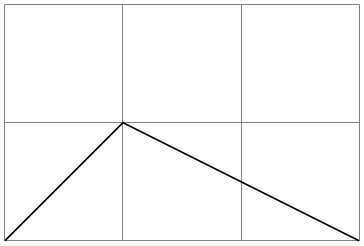
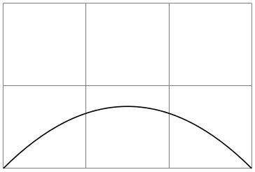
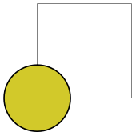

The TikZ and PGF Packages
Manual for version 3.1.10
The Basic Layer
118 Quick Commands¶
This section explains the “quick” commands of pgf. These commands are executed more quickly than the normal commands of pgf, but offer less functionality. You should use these commands only if you either have a very large number of commands that need to be processed or if you expect your commands to be executed very often.
118.1 Quick Coordinate Commands¶
-
\pgfqpoint{⟨x⟩}{⟨y⟩} ¶
This command does the same as \pgfpoint, but ⟨x⟩ and ⟨y⟩ must be simple dimensions like 1pt or 1cm. Things like 2ex or 2cm+1pt are not allowed.
-
\pgfqpointxy{⟨\(s_x\)⟩}{⟨\(s_y\)⟩} ¶
This command does the same as \pgfpointxy, but ⟨\(s_x\)⟩ and ⟨\(s_y\)⟩ must be simple numbers without unit, like 1.234 or 5.0. Mathematical expressions or units are not allowed.
-
\pgfqpointxyz{⟨\(s_x\)⟩}{⟨\(s_y\)⟩}{⟨\(s_z\)⟩} ¶
As \pgfqpointxy, but for three-dimensional coordinates. Any argument needs to be a number without unit.
-
\pgfqpointscale{⟨factor⟩}{⟨coordinate⟩} ¶
As \pgfpointscale, but {⟨factor⟩} must be a simple number without unit, as for the other “quick” commands.
118.2 Quick Path Construction Commands¶
The difference between the quick and the normal path commands is that the quick path commands
-
• do not keep track of the bounding boxes,
-
• do not allow you to arc corners,
-
• do not apply coordinate transformations.
However, they do use the soft-path subsystem (see Section 121 for details), which allows you to mix quick and normal path commands arbitrarily.
All quick path construction commands start with \pgfpathq.
-
\pgfpathqmoveto{⟨x dimension⟩}{⟨y dimension⟩} ¶
Either starts a path or starts a new part of a path at the coordinate \((\meta {x dimension},\meta {y dimension})\). The coordinate is not transformed by the current coordinate transformation matrix. However, any low-level transformations apply.

\begin{tikzpicture}
\draw[help lines] (0,0) grid
(3,2);
\pgftransformxshift{1cm}
\pgfpathqmoveto{0pt}{0pt} % not transformed
\pgfpathqlineto{1cm}{1cm} % not transformed
\pgfpathlineto{\pgfpoint{2cm}{0cm}}
\pgfusepath{stroke}
\end{tikzpicture}
-
\pgfpathqlineto{⟨x dimension⟩}{⟨y dimension⟩} ¶
The quick version of the line-to operation.
-
\pgfpathqcurveto{⟨\(s^1_x\)⟩}{⟨\(s^1_y\)⟩}{⟨\(s^2_x\)⟩}{⟨\(s^2_y\)⟩}{⟨\(t_x\)⟩}{⟨\(t_y\)⟩} ¶
The quick version of the curve-to operation. The first support point is \((s^1_x,s^1_y)\), the second support point is \((s^2_x,s^2_y)\), and the target is \((t_x,t_y)\).

\begin{tikzpicture}
\draw[help lines] (0,0) grid
(3,2);
\pgfpathqmoveto{0pt}{0pt}
\pgfpathqcurveto{1cm}{1cm}{2cm}{1cm}{3cm}{0cm}
\pgfusepath{stroke}
\end{tikzpicture}
-
\pgfpathqcircle{⟨radius⟩} ¶
Adds a radius around the origin of the given ⟨radius⟩. This command is orders of magnitude faster than \pgfpathcircle{\pgfpointorigin}{⟨radius⟩}.

\colorlet{examplefill}{yellow!80!black}
\begin{tikzpicture}
\draw[help lines] (0,0) grid
(1,1);
\pgfpathqcircle{10pt}
\pgfsetfillcolor{examplefill}
\pgfusepath{stroke,fill}
\end{tikzpicture}
118.3 Quick Path Usage Commands¶
The quick path usage commands perform similar tasks as \pgfusepath, but they
-
• do not add arrows,
-
• do not modify the path in any way, in particular,
-
• ends are not shortened,
-
• corners are not replaced by arcs.
Note that you have to use the quick versions in the code of arrow tip definitions since, inside these definition, you obviously do not want arrows to be drawn.
-
\pgfusepathqstroke ¶
Strokes the path without further ado. No arrows are drawn, no corners are arced.
\begin{pgfpicture}
\pgfpathqcircle{5pt}
\pgfusepathqstroke
\end{pgfpicture}
-
\pgfusepathqfill ¶
Fills the path without further ado.
-
\pgfusepathqfillstroke ¶
Fills and then strokes the path without further ado.
-
\pgfusepathqclip ¶
Clips all subsequent drawings against the current path. The path is not processed.
118.4 Quick Text Box Commands¶
-
\pgfqbox{⟨box number⟩} ¶
This command inserts a TeX box into a {pgfpicture} by “escaping” to TeX, inserting the box number ⟨box number⟩ at the origin, and then returning to the typesetting the picture.
-
\pgfqboxsynced{⟨box number⟩} ¶
This command works similarly to the \pgfqbox command. However, before inserting the text in ⟨box number⟩, the current coordinate transformation matrix is applied to the current canvas transformation matrix (is it “synced” with this matrix, hence the name).
Thus, this command basically has the same effect as if you first called \pgflowlevelsynccm followed by \pgfqbox. However, this command will use \hskip and \raise commands for the “translational part” of the coordinate transformation matrix, instead of adding the translational part to the current canvas transformation matrix directly. Both methods have the same effect (box ⟨box number⟩ is translated to where it should be), but the method used by \pgfqboxsynced ensures that hyperlinks are placed correctly. Note that scaling and rotation will not (cannot, even) apply to hyperlinks.